Installation
-
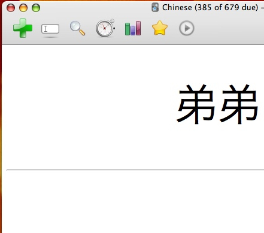
If you haven't already, download and install Anki. The Pinyin Toolkit is a plugin built on top of Anki. Anki provides the powerful spaced repetition system for aiding memorisation, and the Pinyin Toolkit enhances it with plenty of Chinese-specific goodness.
Anki (and Pinyin Toolkit) is available on all the major platforms: Windows, Mac OS X and Linux.
-
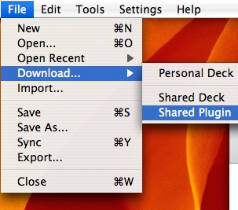
We distribute the plugin via Anki's built-in mechanism for downloading plugins, so the next step is to open Anki, and then choose "File" > "Download" > "Shared Plugin".
-
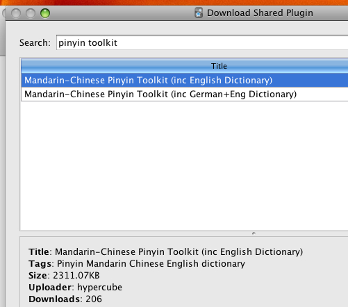
You'll be presented with a huge list of available plugins. Search for "Pinyin Toolkit" and choose "Install" to download and install the plugin.
If you haven't already, you might also be interested in installing the "Hanzi Stats" plugin, which provides a handy summary of your progress towards the various HSK levels.
-
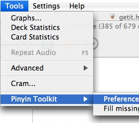
Restart Anki. The Pinyin Toolkit is now installed! However, we recommend that you take this opportunity to install an audio pack for use with text-to-speech. If you don't want to use this feature, you can skip to the final step.
To begin, enter the Toolkit preferences by choosing "Tools" > "Pinyin Toolkit" > "Preferences".
-
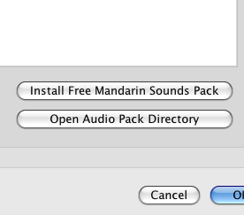
To install the audio pack, click "Install Free Mandarin Sounds Pack" on the "Audio" tab of the Pinyin Toolkit preferences. You can also use this opportunity to tweak some of the other settings, should you so wish.
The Mandarin Sounds audio pack is a 14MB file, so the download process might take a while. Give it time!
-
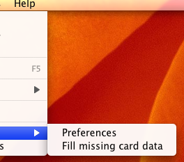
Now, you can either set up an existing deck for use with the Toolkit or download the demo deck that has been preconfigured to demonstrate the features of the Toolkit.
For licensing and download size reasons, the demo deck is distributed without any media. For this reason, we recommend using the "Tools" > "Pinyin Toolkit" > "Fill missing card data" menu option the first time you open the demo deck after installing an audio pack.
Once you've configured your deck you can start adding facts! Alternatively, you can get the Toolkit to try and add missing information to existing facts using the "Fill missing card data" option discussed above. If you choose this option, it might be wise to keep a backup of your deck around, in case you don't like the results!
{kind=link}
{kind=link}
{kind=link}
{kind=link}
{kind=link}
{kind=link}
Setting Up A Deck
-
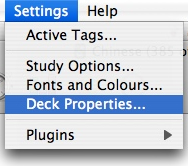
To set up an Anki flashcard deck for use with the Pinyin Toolkit, you need to make a few simple changes. Firstly, we are going to add the "Mandarin" tag to the deck. Open the "Settings" > "Deck Properties" menu item.
-
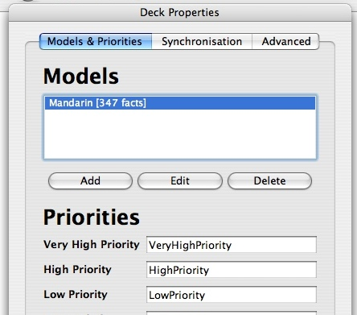
You should now be faced with the Deck Properties dialog. Choose the model you wish to use with the Toolkit and then click "Edit".
It is perfectly possible to use more than one model with the Toolkit - just repeat the next steps with every model you wish to be considered.
-
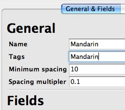
Add the tag to the deck by changing the value of the "Tags" field to "Mandarin". If you want to add to an existing list of tags, you may do so by separating it from the previous tags using a space.
-
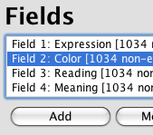
The penultimate step is to make sure your deck has the right fields in it. The Toolkit will attempt to guess what a field is intended for by looking at its name, and if it can't find fields with the right names then various features won't work as intended.
In order to let the Toolkit find your fields, you need to add new fields or modify existing ones in your model so that they have one of the recognised names:
Purpose
Recognised Names
Expression: where you type Hanzi. Defines the subject of the card.
"Expression", "Hanzi", "Chinese", "汉字", "中文"
Color: where you want a colored version of your Hanzi to appear.
"Color", "Colour", "Colored Hanzi", "彩色"
Reading: the pronunciation of the Hanzi in pinyin format.
"Reading", "Pinyin", "PY", "拼音"
Meaning: your local-language equivalent of the Hanzi - the definition.
"Meaning", "Definition", "English", "German", "French", "意思", "翻译", "英语", "法语", "德语"
Measure word: the word or words that are used to quantify the subject of this card.
"MW", "Measure Word", "Classifier", "量词"
Audio: contains the audio-playing tags corresponding to the Hanzi on this card.
"Audio", "Sound", "Spoken", "声音"
It's perfectly OK for you not to add some (or even all!) of these fields to your deck - but the Toolkit will be less functional as a result of the omission.
-
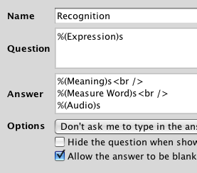
The very last step is to edit your card templates to include references to the new fields we've just set up. Go to the "Card Templates" and set up the substitutions to suit your taste. An example "Answer" template might look as follows:
%(Color)s: %(Reading)s<br />
%(Meaning)s<br />
%(Measure Word)s<br />
%(Audio)s
{kind=link}
{kind=link}
{kind=link}
{kind=link}
{kind=link}